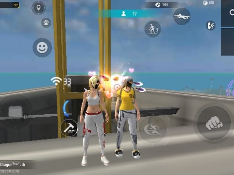

Setelah melewati semua pertanyaan, sekarang ada satu pesan yang ingin aku sampaikan khusus untukmu... 🥹💕
Ada sebuah pesan yang sudah
aku simpan untukmu.
Mungkin kata-kata ini tidak akan
pernah cukup untuk menggambarkan
betapa berartinya persahabatan
kita...

Untuk kamu, sahabat yang begitu
berarti dalam hidupku... 💗
Selamat ulang tahun untuk salah satu
orang yang kehadirannya selalu punya
tempat tersendiri di hidupku.
🎂🎉
Hari ini mungkin hanya terlihat seperti
bertambahnya satu angka di umurmu.
Tapi bagiku, hari ini adalah pengingat
bahwa dunia pernah menghadirkan
seseorang sebaik dan seberharga kamu
dalam hidupku. 🥹❤️
Aku masih sering berpikir, dari sekian
banyak orang yang bisa kita temui di
dunia ini, ternyata kita bisa dipertemukan
dan akhirnya menjadi sahabat.
Padahal awalnya mungkin kita tidak
pernah menyangka kalau seseorang yang
awalnya hanya kita kenal biasa bisa
menjadi seseorang yang kemudian
menyimpan begitu banyak cerita bersama
kita.
Terima kasih karena selama ini sudah
menjadi bagian dari perjalanan hidupku.
Terima kasih untuk setiap tawa yang
pernah kita bagi, setiap cerita yang
pernah kita dengarkan, setiap candaan
yang mungkin sebenarnya tidak lucu
tapi tetap berhasil membuat kita tertawa,
dan setiap momen sederhana yang sekarang
berubah menjadi kenangan yang begitu
berharga. 🤍
Terima kasih juga karena pernah menjadi
tempat untuk bercerita ketika semuanya
terasa berat.
Terima kasih karena mau mendengarkan,
bahkan ketika ceritaku mungkin terlalu
panjang dan berulang-ulang.
Terima kasih karena tidak selalu
membutuhkan alasan untuk tetap ada.
Mungkin aku tidak selalu mengatakan
betapa berartinya kamu bagiku.
Kadang aku juga tidak pandai menunjukkan
rasa terima kasihku.
Tapi percayalah, aku sangat menghargai
setiap hal kecil yang pernah kamu lakukan.
Ada banyak sekali kenangan yang sudah
kita lewati.
Ada hari-hari ketika kita tertawa sampai
lupa waktu, ada hari ketika kita saling
mengejek, ada hari ketika kita hanya
membicarakan hal-hal random yang
sebenarnya tidak penting, dan ada juga
hari ketika salah satu dari kita hanya
membutuhkan seseorang untuk menemani.
Dan dari semua itu, aku sadar bahwa
persahabatan bukan tentang harus selalu
bersama setiap waktu.
Bukan juga tentang harus selalu
sepemikiran atau tidak pernah berbeda
pendapat.
Menurutku, persahabatan adalah tentang
tetap memilih untuk saling memahami
meskipun terkadang berbeda.
Tentang tetap saling mendoakan meskipun
sedang tidak berada di tempat yang sama.
Tentang mengetahui bahwa ketika suatu
hari kita membutuhkan seseorang,
masih ada satu nama yang bisa kita cari.
Aku tidak tahu bagaimana perjalanan
hidup kita beberapa tahun ke depan.
Mungkin nanti kita akan memiliki
kesibukan masing-masing.
Mungkin kita akan bertemu lebih jarang.
Mungkin akan ada banyak hal yang berubah.
Tapi aku berharap, sesibuk apa pun
hidup kita nanti, sejauh apa pun langkah
kita pergi, semoga kita tidak pernah
benar-benar menjadi orang asing.
Semoga nanti ketika kita sudah jauh
lebih dewasa, kita masih bisa duduk
bersama dan tertawa mengingat semua
hal bodoh yang pernah kita lakukan.
Mengingat bagaimana kita pernah
melewati masa-masa sulit bersama.
Mengingat betapa sederhananya
kebahagiaan kita dulu.
Untuk umurmu yang baru, aku tidak ingin
hanya mendoakanmu agar mendapatkan
apa yang kamu inginkan.
Aku ingin mendoakan sesuatu yang
lebih dari itu.
Semoga kamu selalu dikelilingi
orang-orang yang tulus menyayangimu.
Semoga langkahmu selalu dipermudah.
Semoga setiap usaha yang kamu lakukan
menemukan jalannya.
Semoga ketika kamu merasa lelah,
kamu selalu menemukan alasan untuk
kembali tersenyum.
Semoga kamu tidak terlalu keras
kepada dirimu sendiri.
Kalau suatu hari kamu merasa gagal,
semoga kamu mengingat bahwa gagal
bukan berarti kamu tidak berharga.
Kalau suatu hari kamu merasa tidak
cukup baik, semoga kamu ingat bahwa
ada orang-orang yang bersyukur karena
pernah mengenalmu.
Dan kalau suatu hari kamu merasa
sendirian, semoga kamu ingat bahwa
kamu tidak benar-benar sendirian.
Ada orang-orang yang menyayangimu,
termasuk aku sebagai sahabatmu. 🤍
Terima kasih sudah bertahan sampai
sejauh ini.
Terima kasih sudah menjadi dirimu sendiri.
Jangan merasa harus menjadi sempurna
hanya untuk membuat orang lain
menyukaimu.
Tetaplah menjadi kamu yang aku kenal:
seseorang yang punya banyak cerita,
banyak mimpi, banyak kekurangan,
tetapi tetap punya hati yang baik.
Aku berharap suatu hari nanti ketika
kamu melihat kembali perjalanan
hidupmu, kamu bisa tersenyum dan berkata:
"Ternyata aku sudah melewati
begitu banyak hal, dan aku berhasil
sampai sejauh ini."
Dan aku berharap, kalau saat itu tiba,
aku masih menjadi salah satu orang
yang bisa mendengarkan ceritamu.
🥹💕
Sekali lagi, selamat ulang tahun,
sahabatku. 🎂💖
Semoga umur yang baru membawa lebih
banyak kebahagiaan, lebih banyak
kesempatan, lebih banyak alasan untuk
tersenyum, dan lebih banyak cerita indah
yang bisa kita kenang bersama.
Terima kasih sudah hadir dalam hidupku.
Terima kasih sudah menjadi sahabatku.
Dan terima kasih untuk semua kenangan
yang sampai hari ini masih membuatku
tersenyum.
Aku mungkin tidak tahu apa yang akan
terjadi di masa depan, tapi untuk hari
ini aku hanya ingin mengatakan satu hal:
Aku bersyukur pernah bertemu
denganmu. ❤️
Semoga persahabatan kita bukan hanya
menjadi bagian dari masa lalu, tetapi
menjadi salah satu cerita yang tetap
kita bawa sampai kita tua nanti.
HAPPY BIRTHDAY,
MY BEST FRIEND! 🎂🎉💖
Dengan penuh rasa sayang,
Sahabatmu yang selalu mendoakanmu. 🤍
💕 Klik kartu untuk membaca pesan